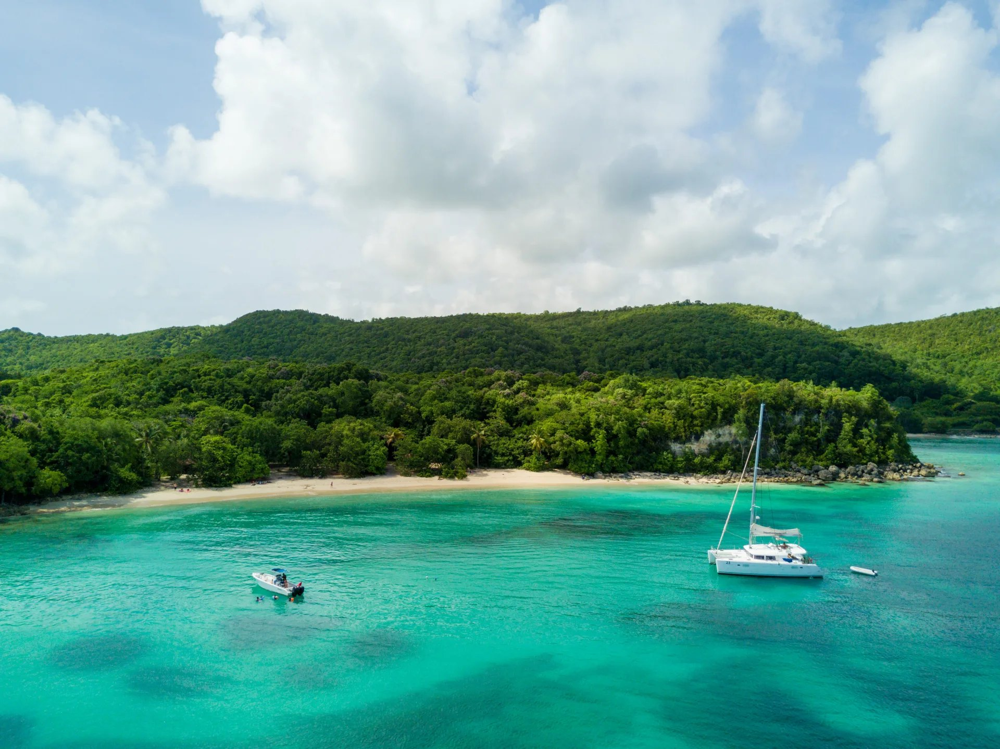

Places to visit, practical tips and good addresses to plan your stay in Marie-Galante.

November 12, 2026
Empty beaches, rum distilleries, windmills and cliffs: our pick of the best things to do in Marie-Galante, the island of a hundred windmills.
We use audience measurement cookies (Google Analytics) to understand how the site is used and improve it. You can accept or decline them.